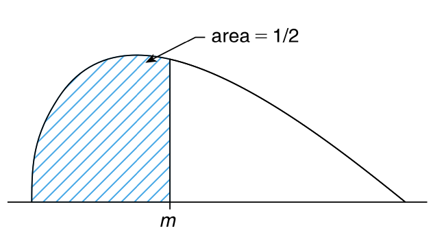
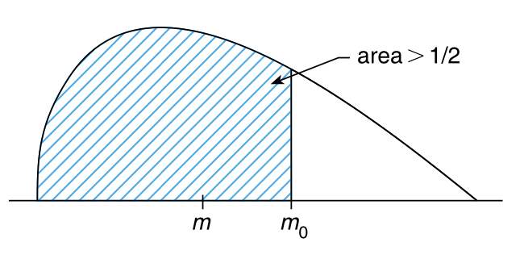
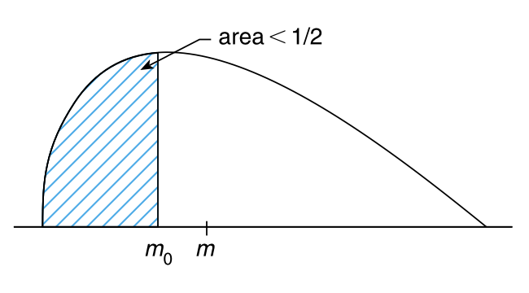

p_value <- 2 * pbinom(80, 200, 0.5)
p_value[1] 0.005685156在本章中，我们将介绍在未指定总体的概率分布的场景下进行假设检验的方法。也就是说，在本章中，我们不再假设总体的分布是正态分布、指数分布或任何其他给定类型的分布。由于没有假设总体分布的特定参数形式，所以我们称这样的检验为 非参数检验（nonparametric test）。
非参数检验 的优势在于它可以应用于不假设总体分布形式的场景。当然，如果可以假设总体分布的特定参数形式，例如正态分布，那么我们就应该使用对应的参数检验。
令 \(X_1,\ldots,X_n\) 表示来自连续分布 \(F\) 的一个样本，假设我们希望检验假设：\(F\) 的中位数——\(m\)——等于某个特定值 \(m_0\)。也就是说，考虑检验如下的假设：
\(H_0:m = m_0 \quad vs \quad H_1:m\neq m_0\)，其中 \(m\) 满足 \(F(m)=0.5\)。
我们注意到每个观测数据独立小于 \(m_0\) 的概率为 \(F(m_0)\)。因此，如果令
\(I_i=\begin{cases}1& \text{如果} X_i\lt m_0\\0& \text{如果} X_i\geq m_0\end{cases}\)
那么 \(I_1,\ldots,I_n\) 就是是相互独立的伯努利随机变量，并且其参数为 \(p = F(m_0)\)。所以原假设等价于说该伯努利分布的参数等于 \(\frac{1}{2}\)。
如果令 \(\sum_{i = 1}^{n}I_i\) 的观测值为 \(v\)，也就是说，\(v\) 是观测数据中小于 \(m_0\) 的数量，那么根据 小节 8.6，检验这个伯努利参数等于 \(\frac{1}{2}\) 的 \(p-\text{value}\) 为
\[ p-\text{value}=2\min(P\{B(n,\frac{1}{2})\leq v\},P\{B(n,\frac{1}{2})\geq v\}) \tag{12.1}\]
其中 \(B(n,p)\) 是参数为 \(n\) 和 \(p\) 的二项分布随机变量。
然而，
\[ \begin{align*} P\{B(n,p)\geq v\}&=P\{n-B(n,p)\leq n-v\}\\ &=P\{B(n,1-p)\leq n-v\} \end{align*} \]
想想这是为什么？
所以根据 式 12.1，我们可以看出 \(p-\text{value}\) 为：
\[ \begin{align*} p-\text{value}&=2\min(P\{B(n,\frac{1}{2})\leq v\},P\{B(n,\frac{1}{2})\leq n-v\})\\ &=\begin{cases}2P\{B(n,\frac{1}{2})\leq v\}& \text{如果} v\leq\frac{n}{2}\\2P\{B(n,\frac{1}{2})\leq n-v\}& \text{如果} v\geq\frac{n}{2}\end{cases} \end{align*} \tag{12.2}\]
由于 \(v=\sum_{i}I_1\) 的值取决于各项 \(X_i - m_0\) 的符号，所以我们称如上的检验被为 符号检验（sign test）。
习题 12.1 如果一个大小为 200 个样本中有 120 个数据小于 \(m_0\)，有 80 个数据大于 \(m_0\)，那么用于检验该样本总体的中位数等于 \(m_0\) 的 \(p-\text{value}\) 是多少？
解 12.1. 根据 式 12.2，检验的 \(p-\text{value}\) 为参数为 \(B(200, \frac{1}{2})\) 的伯努利随机变量小于等于 80 的概率的 2 倍。
因此，在 1% 的显著性水平下，我们将拒绝原假设。\(\blacksquare\)
符号检验 也可以应用于之前的配对 \(t-\text{检验}\) 的场景。例如，让我们回顾一下 习题 8.12，该案例中希望检验最近制定的工业安全计划是否对因事故损失导致的工时数有影响。对于样本来源的 10 个工厂而言，数据对 \((X_i, Y_i)\) 表示工厂 \(i\) 在实施安全计划前后的平均每周损失工时数。令 \(Z_i = X_i - Y_i\)，\(i = 1,\ldots,10\)，那么如果该计划没有任何效果，则 \(Z_i\)，\(i = 1,\ldots,10\) 将是一个来自中位数为 0 的总体分布的样本。由于 \(Z_i\) 的结果值为 7.5、-2.3、2.6、3.7、1.5、-0.5、-1、4.9、4.8、1.6，其中有三个值的符号为负，七个值的符号为正，所以在显著性水平 \(\alpha\) 下，如果 \(\sum_{i = 0}^{3}\binom{10}{i}\left(\frac{1}{2}\right)^{10}\leq\frac{\alpha}{2}\)，那么我们应该拒绝 \(Z\) 的中位数为 0 的假设。由于 \(\sum_{i = 0}^{3}\binom{10}{i}\left(\frac{1}{2}\right)^{10}=\frac{176}{1024}=0.172\)，所以在 5% 的显著性水平下，我们将接受该假设（实际上，在所有小于 0.344 的显著性水平下，我们都会接受原假设）。
因此，符号检验 不能使我们得出安全计划有任何统计上有显著影响的结论，而这与 习题 8.12 中假设安全计划前后的差异数据服从正态分布得到的结论矛盾。原因在于正态分布的假设使得我们不仅考虑大于 0 的值的数量（这是符号检验所考虑的全部），而且还允许我们考虑这些值的大小。接下来要介绍的检验虽然仍然是非参数检验，但会通过考虑与假设的中位数 \(m_0\) 的差异的大多数数据是否会倾向于位于 \(m_0\) 的某一侧来改进 符号检验，即这些差异是否主要大于或小于 \(m_0\)。
我们也可以使用 符号检验 来检验关于总体中位数的单边检验。例如，假设我们要检验：
\(H_0:m\leq m_0 \quad vs \quad H_1:m\gt m_0\)
其中 \(m\) 是总体中位数，\(m_0\) 是某个特定值。令 \(p\) 表示 \(m\) 小于 \(m_0\) 的概率，并且如果原假设为真，那么 \(p\geq\frac{1}{2}\)，如果备择假设为真，那么 \(p\lt\frac{1}{2}\)（参见 图 12.1）。



为了使用 符号检验 来检验单边假设，我们从总体中随机选择 \(n\) 个样本。如果其中有 \(v\) 个样本的值小于 \(m_0\)，那么 \(p-\text{value}\) 就是：如果每个元素小于 \(m_0\) 的概率为 \(\frac{1}{2}\)，则存在 \(v\)（或更少） 个样本的概率。即，
\(p-\text{value}=P\{B(n,\frac{1}{2})\leq v\}\)
习题 12.2 如果能确定某社区家庭的年收入中位数大于 90000 美元，则某家金融机构就会决定在该个社区开设办事处。为了获取相关信息，该金融机构随机选择了 80 个家庭，并记录了其家庭收入。如果其中 28 个家庭的年收入低于 90000 美元，52 个家庭的年收入高于 90000 美元，那么这是否足以说在 5% 的显著性水平下，该社区的家庭年收入中位数大于 90000 美元呢？
解 12.2. 对于如下的原假设：
\(H_0:m\leq90 \quad vs \quad H_1:m\gt90\)
我们需要确定当前的数据是否足以让我们拒绝原假设。
这等价于检验：
\(H_0:p\geq\frac{1}{2} \quad vs \quad H_1:p\lt\frac{1}{2}\)
其中 \(p\) 是从总体中随机选择一个家庭其年收入小于 90000 美元的概率。因此，
\(p-\text{value}=P(B(80,\frac{1}{2})\leq28)=\text{pbinom}(28,80,\frac{1}{2})=0.004841425\)
所以我们将拒绝年收入中位数小于或等于 90000 美元的原假设。\(\blacksquare\)
类似的，我们可以对中位数至少为 \(m_0\) 的单边假设进行检验。如果选择一个大小为 \(n\) 的随机样本，并且结果中有 \(v\) 个值小于 \(m_0\)，那么 \(p-\text{value}\) 为：
\(p-\text{value}=P\{B(n,\frac{1}{2})\geq v\}\)
符号检验 可用于检验连续分布 \(F\) 的中位数等于某个特定值 \(m_0\) 的假设。然而，在许多应用中，人们不仅希望检验中位数是否等于 \(m_0\)，还希望检验分布是否关于 \(m_0\) 对称。也就是说，如果 \(X\) 具有分布函数 \(F\)，那么对于所有的 \(a \gt 0\)，我们通常希望检验假设（参见 图 12.2）：
\(H_0:P\{X\lt m_0 - a\}=P\{X\gt m_0 + a\}\)
library(ggplot2)
f <- function(x) {
ifelse(x <= 3,
max(0, 0.4 * (x - 3) + sqrt(0.4)),
max(0, -0.4 * (x - 3) + sqrt(0.4)))
}
x <- seq(0, 6, by = 0.1)
y <- sapply(x, f)
df <- data.frame(x = x, y = y)
ggplot(df, aes(x = x, y = y)) +
geom_line() +
scale_x_continuous(breaks = seq(0, 6, by = 1), limits = c(0, 6))虽然仍然可以使用 符号检验 检验 \(F\) 关于 \(m_0\) 的对称性，但 符号检验 只比较了小于和大于 \(m_0\) 的数据值的数量，而没有考虑这两组数据中是否有一组比另一组距离 \(m_0\) 更远。一种考虑到这两组数据中是否有一组比另一组距离 \(m_0\) 更远的非参数检验就是所谓的 符号秩检验（signed rank test）。
令 \(Y_i = X_i - m_0, i = 1,\ldots,n\)，然后对 \(|Y_1|,|Y_2|,\ldots,|Y_n|\) 进行排序（rank）。对于 \(j = 1,\ldots,n\)，令：
\(I_j=\begin{cases}1& \text{如果} |Y_i| \text{中第} j \text{最小值对应的} X_i \text{小于} m_0 \\0& \text{否则} \end{cases}\)
现在，\(\sum_{j = 1}^{n}I_j\) 表示 符号检验 的检验统计量，而 \(T=\sum_{j = 1}^{n}jI_j\) 表示 符号秩检验 的检验统计量。也就是说，符号秩检验 不但会像 符号检验 那样考虑小于 \(m_0\) 的数据，而且会给那些距离 \(m_0\) 最远的数据赋予更大的权重（符号检验 中这些权重都是相同的）。
例 12.1 如果 \(n = 4\)，\(m_0 = 2\)，并且观察数据值为 \(X_1 = 4.2\)、\(X_2 = 1.8\)、\(X_3 = 5.3\)、\(X_4 = 1.7\)，则 \(|X_i - 2|\) 的排序结果为 \(0.2, 0.3, 2.2, 3.3\)。因为第一个数据 0.2 来自 \(X_2\)，而 \(X_2 < 2\)，所以 \(I_1 = 1\)。类似的，\(I_2 = 1\)，\(I_3 = I_4 = 0\)。因此，检验统计量 \(T = 1 + 2 = 3\)。\(\blacksquare\)
当原假设 \(H_0\) 为真时，可以比较容易的计算出检验统计量 \(T\) 的均值和方差。当 \(H_0\) 为真时，意味着 \(Y_j = X_j - m_0\) 的分布关于 \(0\) 对称，因此对于任何给定的 \(\vert Y_j\vert\) 的值（比如说 \(\vert Y_j\vert = y\) ），\(Y_j = y\) 和 \(Y_j = -y\) 的可能性是相等的。所以，在 \(H_0\) 为真时，\(I_1,\ldots,I_n\) 将是独立的随机变量，并且，
\(P\{I_j = 1\}=\frac{1}{2}=P\{I_j = 0\}, j = 1,\ldots,n\)
因此，在 \(H_0\) 为真时，
\[ \begin{align*} E[T]&=E\left[\sum_{j = 1}^{n}jI_j\right]\\ &=\sum_{j = 1}^{n}\frac{j}{2}=\frac{n(n + 1)}{4} \end{align*} \tag{12.3}\]
\[ \begin{align*} \mathrm{Var}(T)&=\mathrm{Var}\left(\sum_{j = 1}^{n}jI_j\right)\\ &=\sum_{j = 1}^{n}j^{2}\mathrm{Var}(I_j)\\ &=\sum_{j = 1}^{n}\frac{j^{2}}{4}=\frac{n(n + 1)(2n + 1)}{24} \end{align*} \tag{12.4}\]
伯努利随机变量 \(I_j\) 的方差为 \(\frac{1}{2}(1-\frac{1}{2})=\frac{1}{4}\)。
可以证明，对于较大的 \(n\)（通常认为 \(n\gt25\) 就足够大了），当 \(H_0\) 为真时，\(T\) 将近似服从均值为 式 12.3 和方差为 式 12.4 的正态分布。虽然可以通过 \(T\) 的近似正态分布推导出在显著性水平 \(\alpha\) 下 \(H_0\) 的假设检验（在快速且便宜的算力出现之前，这一直是常用的方法），但我们不会采用这种方法。我们通过明确计算相关概率来确定给定观察数据下的 \(p-\text{value}\)，接下来我们将具体介绍如何实现该方法。
假设我们需要对 \(H_0\) 进行显著性水平为 \(\alpha\) 的检验。由于备择假设是中位数不等于 \(m_0\)，所以我们需要进行双边检验。也就是说，如果 \(T\) 的观测值等于 \(t\) ，那么如果：
\[ P_{H_0}\{T\leq t\}\leq\frac{\alpha}{2} \quad \text{或者} \quad P_{H_0}\{T\geq t\}\leq\frac{\alpha}{2} \tag{12.5}\]
我们就应该拒绝 \(H_0\)。
当 \(T = t\) 时，观察数据的 \(p-\text{value}\) 为：
\[ p-\text{value}=2\min(P_{H_0}\{T\leq t\},P_{H_0}\{T\geq t\}) \tag{12.6}\]
也就是说，如果 \(T = t\)，符号秩检验 要求在显著性水平 \(\alpha\) 大于等于 \(p-\text{value}\) 时才会拒绝原假设。可以通过下式来减少计算 \(p-\text{value}\) 时所需的计算量（我们将在本节的末尾给出其证明过程）：
\(P_{H_0}\{T\geq t\}=P_{H_0}\left\{T\leq\frac{n(n + 1)}{2}-t\right\}\)
根据 式 12.6，有：
\[ \begin{align*} p-\text{value}&=2\min\left(P_{H_0}\{T\leq t\},P_{H_0}\left\{T\leq\frac{n(n + 1)}{2}-t\right\}\right)\\ &=2P_{H_0}\{T\leq t^{*}\} \end{align*} \]
其中，\(t^* = \min\left(t, \frac{n(n+1)}{2} - t\right)\)
现在还需要计算 \(P_{H_0}\{T\leq t^{*}\}\) 。为此，令 \(P_k(i)\) 表示在原假设 \(H_0\) 为真时，当样本大小为 \(k\) 时，符号秩 统计量 \(T\) 小于或等于 \(i\) 的概率。我们将从 \(k = 1\) 开始确定 \(P_k(i)\) 的递归公式。
当 \(k = 1\) 时，由于只有一个数据值，并且当 \(H_0\) 为真时，这个数据值小于或大于 \(m_0\) 的可能性是相等的，所以 \(T\) 等于 \(0\) 或 \(1\) 的可能性也是相等的。因此
\[ P_{1}(i)=\begin{cases}0&i\lt0\\\frac{1}{2}&i = 0\\1&i\geq1\end{cases} \tag{12.7}\]
假设样本大小为 \(k\)。为了计算 \(P_k(i)\)，我们以 \(I_k\) 的值为条件进行如下计算：
\[ \begin{align*} P_{k}(i)&=P_{H_0}\left\{\sum_{j = 1}^{k}jI_j\leq i\right\}\\ &=P_{H_0}\left\{\sum_{j = 1}^{k}jI_j\leq i\vert I_k = 1\right\}P_{H_0}\{I_k = 1\}\\ &\quad +P_{H_0}\left\{\sum_{j = 1}^{k}jI_j\leq i\vert I_k = 0\right\}P_{H_0}\{I_k = 0\}\\ &=P_{H_0}\left\{\sum_{j = 1}^{k - 1}jI_j\leq i - k\vert I_k = 1\right\}P_{H_0}\{I_k = 1\}\\ &\quad +P_{H_0}\left\{\sum_{j = 1}^{k - 1}jI_j\leq i\vert I_k = 0\right\}P_{H_0}\{I_k = 0\}\\ &=P_{H_0}\left\{\sum_{j = 1}^{k - 1}jI_j\leq i - k\right\}P_{H_0}\{I_k = 1\}+P_{H_0}\left\{\sum_{j = 1}^{k - 1}jI_j\leq i\right\}P_{H_0}\{I_k = 0\} \end{align*} \]
其中最后一个等式利用了 \(I_1,\ldots,I_{k - 1}\) 和 \(I_k\) 在 \(H_0\) 为真时相互独立的特性。现在 \(\sum_{j = 1}^{k - 1}jI_j\) 与样本大小为 \(k - 1\) 时的 符号秩 统计量具有相同的分布，并且由于：
\(P_{H_0}\{I_k = 1\}=P_{H_0}\{I_k = 0\}=\frac{1}{2}\)
所以，有：
\[ P_{k}(i)=\frac{1}{2}P_{k - 1}(i - k)+\frac{1}{2}P_{k - 1}(i) \tag{12.8}\]
利用 式 12.7 和 式 12.8 给出的递归公式，我们可以一直计算出 \(P_2(\cdot)\)，\(P_3(\cdot)\)，……，直到得到我们所需的 \(P_n(t^{*})\)。
例 12.2 对于 例 12.1 中的数据，
\(t^* = \min\left(3, \frac{4 \cdot 5}{2} - 3\right) = 3\)
因此，\(p-\text{value}\) 为 \(2P_4(3)\)，其计算如下：
\(P_2(0)=\frac{1}{2}[P_1(-2)+P_1(0)]=\frac{1}{4}\)
\(P_2(1)=\frac{1}{2}[P_1(-1)+P_1(1)]=\frac{1}{2}\)
\(P_2(2)=\frac{1}{2}[P_1(0)+P_1(2)]=\frac{3}{4}\)
\(P_2(3)=\frac{1}{2}[P_1(1)+P_1(3)]=1\)
\(P_3(0)=\frac{1}{2}[P_2(-3)+P_2(0)]=\frac{1}{8} \quad \because P_2(-3)=0\)
\(P_3(1)=\frac{1}{2}[P_2(-2)+P_2(1)]=\frac{1}{4}\)
\(P_3(2)=\frac{1}{2}[P_2(-1)+P_2(2)]=\frac{3}{8}\)
\(P_3(3)=\frac{1}{2}[P_2(0)+P_2(3)]=\frac{5}{8}\)
\(P_4(0)=\frac{1}{2}[P_3(-4)+P_3(0)]=\frac{1}{16}\)
\(P_4(1)=\frac{1}{2}[P_3(-3)+P_3(1)]=\frac{1}{8}\)
\(P_4(2)=\frac{1}{2}[P_3(-2)+P_3(2)]=\frac{3}{16}\)
\(P_4(3)=\frac{1}{2}[P_3(-1)+P_3(3)]=\frac{5}{16}\) \(\blacksquare\)
可以使用 R 来获得检验统计量 \(T\) 和 \(p-\text{value}\) 的值。但是需要注意的是，R 并没有直接给出 \(T\) 的值，而是给出了 \(V = n(n+1)/2 - T\) 的值。为了使用 R 执行 符号秩检验——有时也称为 Wilcoxon 符号秩检验（Wilcoxon signed rank test）——来检验假设：数据集 \(x_1,...,x_n\) 关于 \(m_0\) 对称，可以执行如下的代码：
wilcox.test() 将给出检验的 \(p-\text{value}\)，例如，对于 例 12.1 中的数据而言：
Wilcoxon signed rank exact test
data: x
V = 7, p-value = 0.625
alternative hypothesis: true location is not equal to 2在本节就要结束的时候，我们给出 \(P_{H_0}\{T\geq t\}=P_{H_0}\left\{T\leq\frac{n(n + 1)}{2}-t\right\}\) 的证明。
为了验证上述等式，首先注意到：如果 \(\vert Y_1\vert,\ldots,\vert Y_n\vert\) 中第 \(j\) 小的值来自一个大于 \(m_0\) 的数据值，那么 \(1 - I_j\) 将等于 \(1\)，否则 \(1 - I_j\) 将等于 \(0\)。因此，如果我们令：
\(T^{1}=\sum_{j = 1}^{n}j(1 - I_j)\)
那么 \(T^{1}\) 将表示大于 \(m_0\) 的数据值的 \(\vert Y_j\vert\) 的秩之和。根据对称性，在原假设 \(H_0\) 为真时，\(T^{1}\) 与 \(T\) 具有相同的分布。此时：
\(T^{1}=\sum_{j = 1}^{n}j-\sum_{j = 1}^{n}jI_j=\frac{n(n + 1)}{2}-T\)
所以：
\[ \begin{align*} P\{T\geq t\}&=P\{T^{1}\geq t\} \quad \because T\text{ 和 }T^{1}\text{ 具有相同分布}\\ &=P\{\frac{n(n + 1)}{2}-T\geq t\}\\ &=P\{T\leq\frac{n(n + 1)}{2}-t\} \end{align*} \]
假设某种具有可测量特性的产品的生产方式有两种不同的方法，我们正在研究这两种不同的生产方法，以确定这两种生产方法所生产的产品是否在统计上是一致的。
为了解决这个问题，令 \(X_1, \ldots, X_n\) 表示使用方法 1 生产的 \(n\)个产品的测量值样本，类似地，令 \(Y_1, \ldots, Y_m\)表示使用方法 2 生产的 \(m\)个产品的测量值样本。如果我们令 \(F\)和 \(G\)分别表示这两个样本的分布函数，并假设它们都是连续的，那么我们需要检验的假设为：\(H_0 : F = G\)。
可以使用秩和检验（rank sum test）检验——又称为 Mann-Whitney 检验或 Wilcoxon 检验——来检验 \(H_0\)。
秩和检验则利用第一个样本中的数据的秩的总和作为检验统计量 \(T\)，即：\(T = \sum_{i=1}^n R_i\)。
例 12.3 为对比两种防腐处理方式的效果，我们设计了一个实验，并对这两种处理下的金属样本进行了对应的测量，测量结果如下：
如上的数据表示金属样本上的腐蚀坑的最大深度，单位为千分之一英寸。我们对数据进行升序排序得到：
\(58.5, 59.4, 65.2^*, 66.2, 67.1^*, 68, 69.4^*, 72.1, 74^*, 78.2^*, 80.3^*\)
带星号 (*) 的数据表示该数据来自样本 1。因此，检验统计量的值为：
\(T = 3 + 5 + 7 + 9 + 10 + 11 = 45\) \(\blacksquare\)
假设我们希望在显著性水平 \(\alpha\) 下检验 \(H_0\)。如果检验统计量 \(T\) 的观察值为 \(T = t\)，则如果满足 式 12.9，我们就应当拒绝 \(H_0\)：
\[ P_{H_0}\{T \leq t\} \leq \frac{\alpha}{2} \quad \text{或} \quad P_{H_0}\{T \geq t\} \leq \frac{\alpha}{2} \tag{12.9}\]
也就是说，如果第一组样本的秩的总和 \(T\) 的值太小或太大，以至于从随机性角度来解释时他们发生的概率非常小，则应当拒绝假设 \(H_0\)。
对于整数 \(t\)：
\(P\{T \geq t\} = 1 - P\{T < t\} = 1 - P\{T \leq t - 1\}\)
根据 式 12.9，可知，在以条件下需要拒绝 \(H_0\)：
\[ P_{H_0}\{T \leq t\} \leq \frac{\alpha}{2} \quad \text{或} \quad P_{H_0}\{T \leq t - 1\} \geq 1 - \frac{\alpha}{2} \tag{12.10}\]
为了计算 式 12.10 中的概率，设 \(P(N, M, K)\) 表示在样本大小分别为 \(N\) 和 \(M\) 且 \(H_0\) 为真时，第一个样本的秩的总和小于或等于 \(K\) 的概率。现在我们将推导 \(P(N, M, K)\) 的递归公式，这将帮助我们计算所需的概率值：\(P(n, m, t) = P_{H_0}\{T \le t\}\) 和 \(P(n, m, t - 1)\)。
在 \(N\) 和 \(M\) 为样本大小且 \(H_0\) 为真时，为了计算第一个样本的秩的总和小于或等于 \(K\) 的概率，我们需要考虑这 \(N+M\) 个数据中的最大值是来自第一个样本还是来自第二个样本。
此外，由于最大值在所有 \(N+M\) 个数据中的概率是相同的，所以最大值来自第一个样本的概率为 \(\frac{N}{N+M}\)，于是我们得到：
\[ P(N, M, K) = \frac{N}{N+M} P(N-1, M, K - N - M) + \frac{M}{N+M} P(N, M-1, K) \tag{12.11}\]
根据初始条件：
\[ P(1, 0, K) = \begin{cases} 0 & \text{若 } K \leq 0, \\ 1 & \text{若 } K > 0, \end{cases} \quad P(0, 1, K) = \begin{cases} 0 & \text{若 } K < 0, \\ 1 & \text{若 } K \geq 0 \end{cases} \]
通过 式 12.11 的递归公式，可以求解 \(P(n, m, t - 1)\) 和 \(P(n, m, t)\)。
例 12.4 假设我们希望计算 \(P(2, 1, 3)\)。我们使用 式 12.11 进行计算：
\(P(2, 1, 3) = \frac{2}{3} P(1, 1, 0) + \frac{1}{3} P(2, 0, 3)\)
\(P(1, 1, 0) = \frac{1}{2} P(0, 1, -2) + \frac{1}{2} P(1, 0, 0) = 0\)
\(P(2, 0, 3) = P(1, 0, 1) = P(0, 0, 0) = 1\)
因此，
\(P(2, 1, 3) = \frac{1}{3}\)
为了使两个 \(X\) 值的秩的总和小于或等于 3，\(X_1, X_2, Y_1\) 中最大的值必须是 \(Y_1\)。在 \(H_0\) 为真的情况下，\(P(2, 1, 3)\) 为 \(\frac{1}{3}\)。 \(\blacksquare\)
由于秩和检验要求在以下任一条件成立时拒绝 \(H_0\)：
\(2P(n, m, t) \leq \alpha \quad \text{或} \quad \alpha \geq 2[1 - P(n, m, t - 1)]\)
因此，当 \(T = t\) 时，检验统计量的 \(p-\text{value}\) 为：
\(p-\text{value} = 2 \min \{P(n, m, t), 1 - P(n, m, t - 1)\}\)
可以使用 R 语言来获得检验统计量 \(T\) 的值（在 R 中称检验统计量为 \(W\)）以及对应的 \(p-\text{value}\)。可以按照如下的步骤使用秩和检验（在 R 中称之和检验为 Wilcoxon 秩和检验）来检验数据集 \(x_1, \ldots, x_n\) 和 \(y_1, \ldots, y_m\) 是否来自同一分布：
如上代码将输出检验的 \(p-\text{value}\)。例如，对于 例 12.3 而言，我们可以得到如下的结果：
Wilcoxon rank sum exact test
data: x and y
W = 24, p-value = 0.1255
alternative hypothesis: true location shift is not equal to 0尽管前几节已经介绍了如何检验两个总体分布是否相同，但我们有时会遇到总体个数大于两个的情况。因此，假设有 \(k\) 个总体，并且 \(F_i\) 表示某个可测量变量在总体 \(i\) 上的分布函数，我们希望检验如下的原假设：
\(H_0: F_1 = F_2 = \cdots = F_k \quad vs \quad H_1: \text{并非所有的 } F_i \text{ 都相等}\)
为检验上述原假设，假设从这 \(k\) 个总体中独立抽取样本。令 \(n_i\) 表示从总体 \(i\) 中抽取的样本量 (\(i = 1, \ldots, k\))，并令 \(N = \sum_{i=1}^k n_i\) 表示所有样本的总数。现在，将这 \(N\) 个样本值从小到大排序，并令 \(R_i\) 表示从总体 \(i\) 中抽取的 \(n_i\) 个样本值的秩之和 (\(i = 1, \ldots, k\))。
当 \(H_0\) 成立时，任何一个样本值的秩都可能是 \(1, \ldots, N\) 中的任意一个，因此样本值的秩的期望为：
\(\overline{r} = \frac{1 + 2 + \cdots + N}{N} = \frac{N + 1}{2}\)
因此，当 \(H_0\) 成立时，总体 \(i\) 的 \(n_i\) 个样本值的秩的总和的期望为：
\(E[R_i] = n_i \bar{r}\)
根据拟合优度检验的启发，我们考虑如下的检验统计量：
\(T = \sum_{i=1}^k \frac{(R_i - n_i \bar{r})^2}{n_i \bar{r}}\)
当 \(T\) 很大时，我们拒绝原假设 \(H_0\)。
\[ \begin{align} T &= \frac{1}{\bar{r}} \sum_{i=1}^k \frac{R_i^2 - 2 R_i n_i \bar{r} + n_i^2 \bar{r}^2}{n_i} \\ &=\frac{1}{\bar{r}} \left( \sum_{i=1}^k \frac{R_i^2}{n_i} - 2 \sum_{i=1}^k R_i \bar{r} + \bar{r}^2 \sum_{i=1}^k n_i \right) \\ &=\frac{1}{\bar{r}} \sum_{i=1}^k \frac{R_i^2}{n_i} - N \bar{r} \end{align} \]
其中，最后一步的推理使用了以下性质：
\(\sum_{i=1}^k R_i = 1 + 2 + \cdots + N = \frac{N(N + 1)}{2} = N \bar{r}\)
因此，当 \(T\) 很大时拒绝 \(H_0\) 等价于当 \(\sum_{i=1}^k \frac{R_i^2}{n_i}\) 很大时拒绝 \(H_0\)。因此，可以将检验统计量定义为：
\(TS = \sum_{i=1}^k \frac{R_i^2}{n_i}\)
为了确定适当的显著性水平 \(\alpha\)，我们需要确定当 \(H_0\) 成立时 \(TS\) 的分布。虽然 \(T_S\) 的确切分布较为复杂，但当 \(H_0\) 成立且所有 \(n_i \geq 5\) 时，\(\frac{12}{N(N+1)} TS - 3(N+1)\) 的分布近似为自由度为 \(k-1\) 的卡方分布 \(\chi^2_{k-1}\)。因此，在显著性水平 \(\alpha\) 下原假设 \(H_0\) 的近似检验是：
\(拒绝 H_0 当且仅当：\frac{12}{N(N+1)} TS - 3(N+1) \geq \chi^2_{k-1, \alpha}\)
如上的检验称为 Kruskal-Wallis 检验。
习题 12.3 以下数据为洛杉矶某中等规模的图书馆在周二、周三、周四这三天的连续 10 周的访客数量：
这些数据是否支持这三天的访客数量的分布相同的假设？
解 12.3. 对 \(N = 30\) 个数据进行排序，得到三个样本的秩的总和分别为：
\(R_1 = 176, \quad R_2 = 175, \quad R_3 = 114\)
因此，
\(\frac{12}{N(N+1)} TS - 3(N+1) = \frac{12}{30 \cdot 31} \left(\frac{176^2}{10} + \frac{175^2}{10} + \frac{114^2}{10}\right) - 93 = 3.254\)
由于 \(\chi^2_{2, 0.05} = 5.99\)，因此在 5% 的显著性水平下，不能拒绝原假设 \(H_0\)（三天访客数量的分布相同）。
实际的 \(p-\text{value}\) 为：
\(\text{p-value} = P(\chi^2 \geq 3.254) = 1 - \text{pchisq}(3.254, 2) = 0.1965182\) \(\blacksquare\)
统计学中的一个基本假设就是：数据集由某总体的随机样本构成。然而，有时候，数据并非通过真正的随机过程产生，而是可能遵循某种趋势或循环模式。在本节中，我们将考虑一种名为 游程检验（runs test）的检验方法，游程检验 可用于检验给定的数据集是否为随机样本的原假设 \(H_0\)。
假设每个数据的取值要么是 0，要么是 1。也就是说，我们假设每个数据的值可以二分为成功（1）或失败（0）。令 \(X_1, \ldots, X_N\) 表示数据集。任意连续的 1 或 0 的序列称为一个 游程（run）。例如，以下数据集：
\(1 \ 0 \ 0 \ 1 \ 1 \ 1 \ 0 \ 0 \ 1 \ 0 \ 1 \ 1 \ 1 \ 1 \ 0 \ 1 \ 0 \ 0 \ 0 \ 0 \ 1 \ 1\)
包含 11 个 游程：6 个 1 的 游程 和 5 个 0 的 游程。假设数据集 \(X_1, \ldots, X_N\) 包含 \(n\) 个 1 和 \(m\) 个 0，其中 \(n + m = N\)，令 \(R\) 表示 游程 的数量。
如果 \(H_0\) 成立，那么 \(X_1, \ldots, X_N\) 是 \(n\) 个 1 和 \(m\) 个 0 的所有 \(N!/(n!m!)\) 种排列中的任何一种。因此，当 \(H_0\) 成立时，游程 数量 \(R\) 的概率质量函数为：
\(P_{H_0}\{R = k\} = \frac{\text{使 \(n\) 个 \(1\) 和 \(m\) 个 \(0\) 形成 \(k\) 个游程的排列数量}}{\binom{n+m}{n}}\)
可以显式确定这些排列的数量，并证明如下公式成立：
\[ \begin{align} P_{H_0}\{R = 2k\} &= 2 \frac{\binom{m-1}{k-1} \binom{n-1}{k-1}}{\binom{m+n}{n}} \\ P_{H_0}\{R = 2k+1\} &= \frac{\binom{m-1}{k-1} \binom{n-1}{k}}{\binom{m+n}{n}} + \frac{\binom{m-1}{k} \binom{n-1}{k-1}}{\binom{m+n}{n}} \end{align} \tag{12.12}\]
如果数据包含 \(n\) 个 1 和 \(m\) 个 0，游程检验 在观察到的 游程 数量太大或太小以至于无法通过随机性解释时，则会拒绝数据为随机样本的原假设。具体而言，若观察到的 游程 数量为 \(r\)，则 游程检验 的 \(p-\text{value}\) 为：
\(p-\text{value} = 2 \min \{P_{H_0}\{R \geq r\}, P_{H_0}\{R \leq r\}\}\)
当样本规模不大时，可以使用 式 12.12 来精确的计算出 \(p-\text{value}\)。
例 12.5 以下是某球队最近 30 场比赛的结果，其中 \(W\) 表示胜利，\(L\) 表示失败。
\(W \, W \, W \, L \, W \, W \, L \, W \, W \, L \, W \, L \, W \, W \, W \, W \, W \, L \, W \, L \, L \, W \, W \, W \, L \, W \, L \, W \, L \, L\)
这些数据是纯随机产生的吗？
解 12.4. 为了检验随机性假设，需要注意以下事实：该数据包含 20 次 \(W\) 和 10 次 \(L\)，并且有 20 个 游程（run）。为了在 5% 的显著性水平下判断是否拒绝数据是纯随机的这一假设，我们可以使用先前的公式计算 \(p-\text{value}\)。经计算，我们得到 \(p-\text{value}= 0.01845\)，因此，在 5% 的显著性水平下，可以拒绝随机性的原假设。
值得注意的是，这些数据中一个显著的特点是：每当该队输掉一场比赛后，他们总能在下一场比赛中获胜。如果胜利和失败的概率均等，则包含 20 次胜利和 10 次失败的所有结果中，如上数据发生的可能性则非常低。\(\blacksquare\)
当数据值不是 0 和 1 的情况下，我们仍然可以用 游程检验 来检验数据的随机性。为了检验数据 \(X_1, \ldots, X_N\) 是否构成一个随机样本，令 \(s\text{-med}\) 表示样本中位数。同时，令 \(n\) 表示小于等于 \(s\text{-med}\) 的数据值的数量，\(m\) 表示大于 \(s\text{-med}\) 的数据值的数量。（因此，如果 \(N\) 是偶数并且所有数据值互不相同，那么 \(n\) = \(m\) = \(N / 2\)。）
定义 \(I_1, \ldots, I_N\) 为：
\[ I_j = \begin{cases} 1, & \text{如果 } X_j \leq s\text{-med} \\ 0, & \text{否则} \end{cases} \]
如果原始数据构成一个随机样本，那么 \(I_1, \ldots, I_N\) 中的 游程（runs）的数量的概率质量函数如 式 12.12 所示。因此，我们可以使用 游程检验（runs test）对数据值 \(I_1, \ldots, I_N\) 进行检验，以判断原始数据是否是随机数据。
例 12.6 某电池生产线上连续生产的 19 块电池的寿命如下：
\(145, 152, 148, 155, 176, 134, 184, 132, 145, 162, 165, 185, 174, 198, 179, 194, 201, 169, 182\)
样本的中位数是第 10 个最小的值——即 169。根据数据值是小于等于还是大于 169，可得到如下数据：
\(1, 1, 1, 1, 0, 1, 0, 1, 1, 1, 0, 0, 0, 0, 0, 0, 1, 0\)
因此，游程（runs）的数量为 8。根据 ?eq-_12_5_1，可得：
\(p\text{-value} = 0.357\)
因此，我们接受数据是随机数据的假设。\(\blacksquare\)
当 \(n\) 和 \(m\) 都很大并且原假设 \(H_0\) 成立时，游程 数量 \(R\) 近似服从正态分布并且其均值、标准差分别为：
\[ \begin{align} \mu &= \frac{2nm}{n + m} + 1 \\ \sigma &= \sqrt{\frac{2nm(2nm - n - m)}{(n + m)^2(n + m - 1)}} \end{align} \tag{12.13}\]
因此，当 \(n\) 和 \(m\) 都很大时，
\[ \begin{align} P_{H_0}\{R \leq r\} &= P_{H_0}\left\{\frac{R - \mu}{\sigma} \leq \frac{r - \mu}{\sigma}\right\} \\ &\approx P\left\{Z \leq \frac{r - \mu}{\sigma}\right\}, \quad Z \sim N(0, 1) \\ &= \Phi\left(\frac{r - \mu}{\sigma}\right) \end{align} \]
因此，\(P_{H_0}\{R \geq r\} \approx 1 - \Phi\left(\frac{r - \mu}{\sigma}\right)\)
因此，当 \(n\) 和 \(m\) 都很大时，游程检验 的 \(p-\text{value}\) 近似为：
\(\text{p-value} \approx 2 \min \left\{\Phi\left(\frac{r - \mu}{\sigma}\right), 1 - \Phi\left(\frac{r - \mu}{\sigma}\right)\right\}\)
其中，\(\mu\) 和 \(\sigma\) 的值由 式 12.13 给出，\(r\) 是观测到的 游程 数量。
例 12.7 假设一个序列包含 60 个 1 和 60 个 0，该序列中的 游程（runs）数量为 75。由于
\(\mu = 61, \quad \sigma = \sqrt{\frac{3540}{119}} = 5.454\)
因此，\(p-\text{value}\) 近似为：
\[ \begin{align} p\text{-value} &\approx 2 \min\{\Phi(2.567), 1 - \Phi(2.567)\} \\ &= 2 \times (1 - 0.9949) \\ &= 0.0102 \end{align} \]
另一方面，可以证明，\(p-\text{value}\) 的精确值为：
\(p\text{-value} = 0.0130\)
如果 游程（runs）数量不是 75，而是 70，那么 \(p-\text{value}\) 的近似值将为：
\(p\text{-value} \approx 2[1 - \Phi(1.650)] = 0.0990\)
而 \(p-\text{value}\) 的精确值为：
\(p\text{-value} = 0.1189\) \(\blacksquare\)